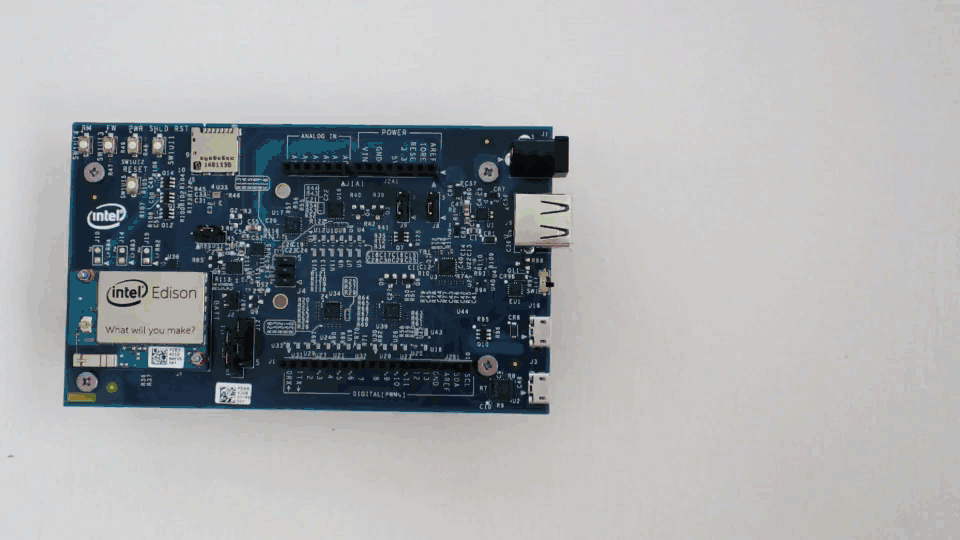

Flash Firmware Manually
The firmware on your Intel® Edison is the board’s operating system. Intel® IoT firmware engineers are constantly improving the performance of the Intel® Edison and enabling new features. When you receive a brand new Intel® Edison, update the firmware on the board to get the best developer experience.
This document will guide you through the manual process required to flash the firmware on the Intel® Edison using any OS platform.
There are 3 parts to updating the firmware on the Intel® Edison:
Want to know if your current firmware is old before flashing?
Refer to Check installed firmware version.
Step 1: Prepare built-in flash storage
Make sure there are no files on the built-in flash storage of the Intel® Edison by formatting the storage. The storage must be formatted as FAT32.

Step 2: Copy over the latest image
Extract the contents of the Yocto complete image zip, then copy the contents to your Intel® Edison drive.
Step 3: Flash the image
Run the reboot ota command on the Intel® Edison to flash the board with the files you copied over in Step 2.
Next Steps
Get your board online in order to turn your IoT board into a true “Internet of Things” device. You also need the IP address of your IoT board to program it using the dev kit IDEs.
At a hackathon? On a busy or restricted Wi-Fi network?
Connect to the Intel® Edison using the device mode micro-USB cable and a virtual Ethernet connection known as “Ethernet over USB”:
At home? Have a dependable Wi-Fi connection?